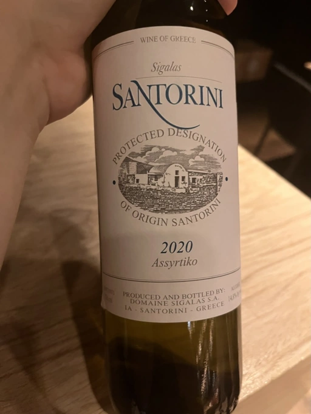

- Type
- White Still, Dry
- Producer
- Domaine Sigalas
- Vintage
- 2020
- Location
- Greece, Santorini POP
- Grapes
- Assyrtiko
- Alcohol
- 14.8
- Sugar
- NA
- Price
- 1132 UAH
- Cellar
- N/A
Ratings
2022-07-25 - 7.50
This is my first Santorini wine, and I must say that my expectations were higher. Despite beautiful notes of iodine and white flowers, everything else is bland. White stone fruits and citrus hints. On the palate, it’s too heavy to enjoy without food. The good part is - it has some evolution in the taste and an interesting finish with notes of salted lemonade.
2022-09-02 - 7.50
Tasting for the second time in a pretty short period of time. The result is the same. It’s good, tasty, but not complex and too heavy. It leaves me puzzled with one question: why would anyone buy it? Especially for the price. White stone fruits, citrus, and fennel. Yup, it has some salinity, yet it’s ruined by dark chocolate bitterness. So why such a high score? Because it’s good. Just not my style, that’s why I am being all drama here.
Wine #4 on volcanic wines tasting by Oleksandr Meier.
Related